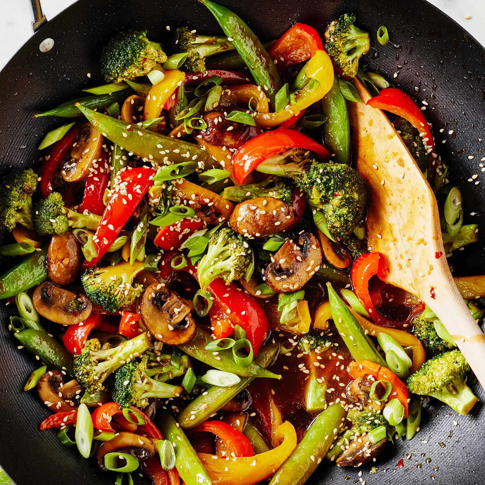

Vegetable Stir Fry

Ingredients
- 1 cup broccoli florets
- 1 bell pepper (sliced)
- 1 carrot (julienned)
- 1 cup mushrooms
- 2 tbsp soy sauce
- 1 tbsp oil
- 1 garlic clove
Instructions
- Heat oil in a pan.
- Add garlic and sauté briefly.
- Add vegetables and stir fry 5–7 minutes.
- Pour soy sauce and mix well.
- Cook until vegetables are tender-crisp.
- Serve hot.
← Back to Home